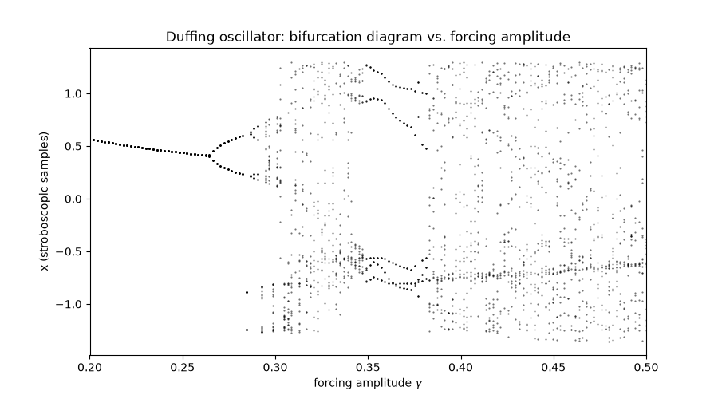
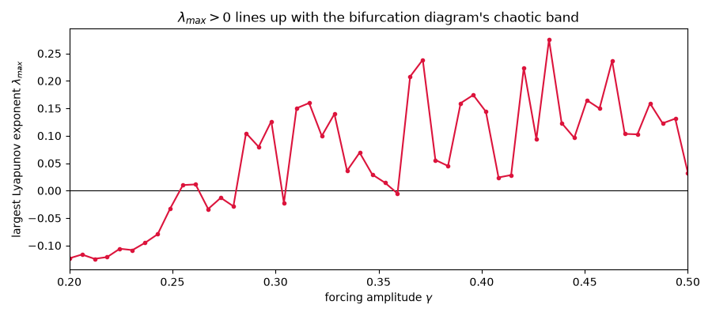

Note
Go to the end to download the full example code.
Bifurcation Diagrams for Continuous Flows: the Duffing Oscillator#
Bifurcation diagrams aren’t only for discrete maps – they’re just as useful for continuous, periodically-forced flows, via a stroboscopic Poincare section: sampling the state once per forcing period turns the continuous flow into an effective discrete map. The flow swept here is the forced, damped Duffing oscillator,
with fixed damping \(\delta=0.3\), linear stiffness \(\alpha=-1\),
cubic stiffness \(\beta=1\), and forcing frequency \(\omega=1.2\)
(so the double-well potential and forcing frequency are held fixed while
only the forcing amplitude \(\gamma\) is swept). This example sweeps
\(\gamma\) and, for each value, plots the surviving stroboscopic
samples, using
physicskit.chaos.visualizers.bifurcation.stroboscopic_bifurcation_sampler() –
the same plot_bifurcation_diagram()
used for the Logistic Map
works here completely unchanged. A companion plot below sweeps the same
\(\gamma\) range with
physicskit.chaos.visualizers.divergence.trajectory_divergence() and
physicskit.chaos.utils.metrics.lyapunov_exponent_from_divergence() to
estimate the largest Lyapunov exponent at each amplitude, turning the
bifurcation diagram’s purely qualitative “band looks chaotic” into the
quantitative \(\lambda_{\max} > 0\) criterion, on the same \(\gamma\)
axis.
import matplotlib.pyplot as plt
import numpy as np
from physicskit.chaos.systems.continuous import Duffing
from physicskit.chaos.utils.metrics import lyapunov_exponent_from_divergence
from physicskit.chaos.visualizers.bifurcation import (
plot_bifurcation_diagram,
stroboscopic_bifurcation_sampler,
)
from physicskit.chaos.visualizers.divergence import trajectory_divergence
Build the stroboscopic sampler#
The forcing period is 2*pi / omega; sampling the state once per forcing
period is what turns the continuous flow into an effective discrete map.
omega = 1.2
period = 2.0 * np.pi / omega
sampler = stroboscopic_bifurcation_sampler(
lambda gamma: Duffing(delta=0.3, alpha=-1.0, beta=1.0, gamma=gamma, omega=omega),
state0=np.array([0.1, 0.0]),
sample_period=period,
n_transient_periods=60,
n_keep_periods=20,
component=0,
dt=0.15,
rtol=1e-6,
atol=1e-8,
)
Sweep the forcing amplitude#
As gamma increases, watch the single-point regular response give way
to period-doubled cycles, and eventually a chaotic band – the same
period-doubling route to chaos as the Logistic Map, now in a physically
driven mechanical oscillator. (Looser tolerances than the sampler’s
defaults keep this parameter sweep fast – it calls the integrator once per
gamma value below.) Each gamma value is fully independent of every
other, so this sweep is also embarrassingly parallel: n_jobs runs it
across a thread pool (real speedup here, since solve_ivp releases the
GIL while it integrates), and show_progress displays a tqdm bar.
gamma_values = np.linspace(0.2, 0.5, 150)
fig, ax = plt.subplots(figsize=(9, 5))
plot_bifurcation_diagram(gamma_values, sampler, n_jobs=4, show_progress=True, marker=".", markersize=1.0, ax=ax)
ax.set_xlabel(r"forcing amplitude $\gamma$")
ax.set_ylabel("x (stroboscopic samples)")
ax.set_title("Duffing oscillator: bifurcation diagram vs. forcing amplitude")
plt.show()

sweeping: 0%| | 0/150 [00:00<?, ?it/s]
sweeping: 1%| | 1/150 [00:00<01:25, 1.74it/s]
sweeping: 3%|▎ | 5/150 [00:00<00:23, 6.18it/s]
sweeping: 5%|▍ | 7/150 [00:01<00:17, 8.31it/s]
sweeping: 6%|▌ | 9/150 [00:01<00:18, 7.51it/s]
sweeping: 7%|▋ | 11/150 [00:01<00:15, 8.70it/s]
sweeping: 9%|▊ | 13/150 [00:01<00:16, 8.46it/s]
sweeping: 10%|█ | 15/150 [00:02<00:16, 8.09it/s]
sweeping: 11%|█ | 16/150 [00:02<00:17, 7.67it/s]
sweeping: 12%|█▏ | 18/150 [00:02<00:14, 8.94it/s]
sweeping: 13%|█▎ | 19/150 [00:02<00:16, 8.18it/s]
sweeping: 13%|█▎ | 20/150 [00:02<00:15, 8.52it/s]
sweeping: 14%|█▍ | 21/150 [00:02<00:15, 8.51it/s]
sweeping: 15%|█▌ | 23/150 [00:02<00:14, 8.51it/s]
sweeping: 17%|█▋ | 25/150 [00:03<00:15, 7.82it/s]
sweeping: 18%|█▊ | 27/150 [00:03<00:14, 8.71it/s]
sweeping: 19%|█▉ | 29/150 [00:03<00:16, 7.37it/s]
sweeping: 21%|██ | 31/150 [00:03<00:13, 8.55it/s]
sweeping: 22%|██▏ | 33/150 [00:04<00:12, 9.24it/s]
sweeping: 23%|██▎ | 35/150 [00:04<00:12, 9.13it/s]
sweeping: 25%|██▍ | 37/150 [00:04<00:12, 8.71it/s]
sweeping: 25%|██▌ | 38/150 [00:04<00:16, 6.82it/s]
sweeping: 27%|██▋ | 41/150 [00:05<00:11, 9.43it/s]
sweeping: 29%|██▊ | 43/150 [00:05<00:12, 8.45it/s]
sweeping: 30%|███ | 45/150 [00:05<00:10, 9.62it/s]
sweeping: 31%|███▏ | 47/150 [00:05<00:13, 7.92it/s]
sweeping: 32%|███▏ | 48/150 [00:05<00:12, 8.08it/s]
sweeping: 34%|███▍ | 51/150 [00:06<00:11, 8.38it/s]
sweeping: 35%|███▌ | 53/150 [00:06<00:11, 8.47it/s]
sweeping: 37%|███▋ | 55/150 [00:06<00:11, 8.37it/s]
sweeping: 39%|███▊ | 58/150 [00:07<00:10, 9.03it/s]
sweeping: 39%|███▉ | 59/150 [00:07<00:11, 8.08it/s]
sweeping: 41%|████▏ | 62/150 [00:07<00:11, 7.70it/s]
sweeping: 43%|████▎ | 64/150 [00:07<00:10, 8.43it/s]
sweeping: 44%|████▍ | 66/150 [00:08<00:11, 7.46it/s]
sweeping: 46%|████▌ | 69/150 [00:08<00:08, 9.29it/s]
sweeping: 47%|████▋ | 71/150 [00:08<00:10, 7.63it/s]
sweeping: 49%|████▊ | 73/150 [00:08<00:09, 8.29it/s]
sweeping: 49%|████▉ | 74/150 [00:09<00:10, 7.59it/s]
sweeping: 51%|█████ | 76/150 [00:09<00:08, 8.45it/s]
sweeping: 51%|█████▏ | 77/150 [00:09<00:08, 8.24it/s]
sweeping: 53%|█████▎ | 79/150 [00:09<00:07, 9.98it/s]
sweeping: 54%|█████▍ | 81/150 [00:09<00:08, 8.07it/s]
sweeping: 56%|█████▌ | 84/150 [00:10<00:09, 7.26it/s]
sweeping: 59%|█████▊ | 88/150 [00:10<00:08, 7.21it/s]
sweeping: 61%|██████▏ | 92/150 [00:11<00:06, 8.98it/s]
sweeping: 63%|██████▎ | 95/150 [00:11<00:05, 9.40it/s]
sweeping: 65%|██████▍ | 97/150 [00:11<00:05, 9.34it/s]
sweeping: 66%|██████▌ | 99/150 [00:12<00:06, 8.00it/s]
sweeping: 68%|██████▊ | 102/150 [00:12<00:05, 9.31it/s]
sweeping: 69%|██████▉ | 104/150 [00:12<00:05, 7.97it/s]
sweeping: 71%|███████ | 106/150 [00:12<00:04, 9.27it/s]
sweeping: 72%|███████▏ | 108/150 [00:12<00:04, 9.58it/s]
sweeping: 73%|███████▎ | 110/150 [00:13<00:04, 8.46it/s]
sweeping: 75%|███████▍ | 112/150 [00:13<00:03, 9.65it/s]
sweeping: 76%|███████▌ | 114/150 [00:13<00:03, 9.10it/s]
sweeping: 77%|███████▋ | 116/150 [00:13<00:03, 9.30it/s]
sweeping: 79%|███████▊ | 118/150 [00:14<00:03, 8.35it/s]
sweeping: 80%|████████ | 120/150 [00:14<00:02, 10.03it/s]
sweeping: 81%|████████▏ | 122/150 [00:14<00:03, 7.86it/s]
sweeping: 83%|████████▎ | 125/150 [00:14<00:02, 9.97it/s]
sweeping: 85%|████████▍ | 127/150 [00:15<00:02, 8.76it/s]
sweeping: 86%|████████▌ | 129/150 [00:15<00:02, 9.86it/s]
sweeping: 87%|████████▋ | 131/150 [00:15<00:02, 8.26it/s]
sweeping: 89%|████████▉ | 134/150 [00:16<00:02, 7.85it/s]
sweeping: 92%|█████████▏| 138/150 [00:16<00:01, 8.53it/s]
sweeping: 93%|█████████▎| 140/150 [00:16<00:01, 9.49it/s]
sweeping: 95%|█████████▍| 142/150 [00:16<00:00, 8.27it/s]
sweeping: 97%|█████████▋| 145/150 [00:17<00:00, 10.57it/s]
sweeping: 98%|█████████▊| 147/150 [00:17<00:00, 9.19it/s]
sweeping: 100%|██████████| 150/150 [00:17<00:00, 11.93it/s]
sweeping: 100%|██████████| 150/150 [00:17<00:00, 8.58it/s]
Quantifying it: the largest Lyapunov exponent, on the same axis#
The bifurcation diagram above only shows where the response looks
irregular; it doesn’t say whether that irregularity is genuine exponential
sensitivity or “just” a very long periodic cycle. Sweeping the same
gamma_values (on a coarser grid, since each point here integrates two
whole trajectories rather than sampling one) with
trajectory_divergence() and
fitting the growth rate of two initially nearby trajectories’
separation gives the largest Lyapunov exponent \(\lambda_{\max}\)
directly: it should track the bifurcation diagram closely, crossing zero
right around where the single point (or handful of stroboscopic points)
gives way to the dense chaotic band above.
gamma_values_lyap = np.linspace(0.2, 0.5, 50)
lyapunov_exponents = np.empty_like(gamma_values_lyap)
for i, gamma in enumerate(gamma_values_lyap):
lyap_system = Duffing(delta=0.3, alpha=-1.0, beta=1.0, gamma=float(gamma), omega=omega)
t_div, delta_t = trajectory_divergence(lyap_system, state0=np.array([0.1, 0.0]), delta_0=1e-8, t_max=150.0, n_points=400, seed=0)
n_fit = int(0.5 * t_div.size)
lyapunov_exponents[i] = lyapunov_exponent_from_divergence(t_div[:n_fit], delta_t[:n_fit] / 1e-8)
fig_lyap, ax_lyap = plt.subplots(figsize=(9, 4))
ax_lyap.axhline(0.0, color="black", lw=0.8)
ax_lyap.plot(gamma_values_lyap, lyapunov_exponents, "o-", color="crimson", markersize=3)
ax_lyap.set_xlim(gamma_values[0], gamma_values[-1])
ax_lyap.set_xlabel(r"forcing amplitude $\gamma$")
ax_lyap.set_ylabel(r"largest Lyapunov exponent $\lambda_{max}$")
ax_lyap.set_title(r"$\lambda_{max} > 0$ lines up with the bifurcation diagram's chaotic band")
fig_lyap.tight_layout()
plt.show()

0$ lines up with the bifurcation diagram's chaotic band" class = "sphx-glr-single-img"/>Total running time of the script: (0 minutes 24.666 seconds)